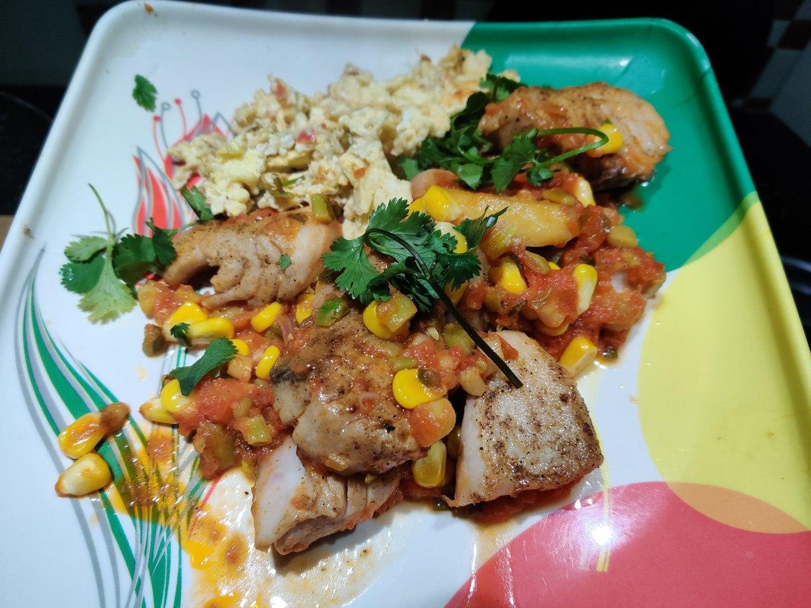
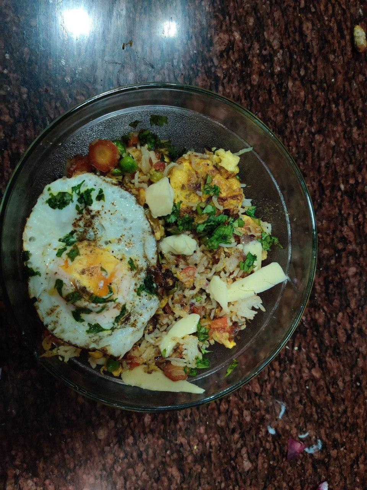

<*- not hungry. just take me home.Recipes
Learned from my mother in an effort to preserve priceless culinary luxuries from oblivion. She learned cooking from my grandmother and both these women developed their intuitions in response to the compliments they received from their family - every remark noted and incorporated so that they can eventually prepare meals that their children would come to relish and love in adulthood. You may or may not like these. I can obviously not speak to your experience. I'm writing these down because I have bad memory. Some notes: - I have acute GI issues. So most of my dishes will make a special note for what can be cooked without red/green spices - I dislike the units of measurement used by most recipes. They're confusing, arbitrary and annoying. So I'll make some clarifications here: ** 1 karchi (ladle for adding oil to a dish): around 10 regular spoons (40ml?). ** 1 spoon (a regular sized indian spoon if that makes any sense): around 3/4th a teaspoon I reckon. ** [SF]: Tag to imply it's stomach friendly for those with sensitive digestive systems. ** [SF] also is an instruction to not add stronger spices to the dish if this is the case. ** 1 indian tomato is(IT) roughly 3/4th the size of an american tomato (AT) ** 1 indian onion (IO) is roughly 1/2 the size of an american onion (AO) ** Most recipes listed are in terms of indian ingredients - Important: Although I've noted precise instructions and measured ingredient additions, they serve only as defaults. I will certainly play around with ingredients, quantities, and variations and hope you will too. There is no such thing as an 'ideal' recipe.
Delicacies
The stuff you trawl the internet for hoping to find something to replicate that can help validate the amateur cook in you that is secretly eating oatmeal and maggi 4 days a week. Effort intensive dishes.
Murg Methi [SF][chicken] Ingredients: (The proportions I tried) - 500gms/chicken - 300gms/fenugreek. - 3/4th of a glass of curd. - A spoonful of the major spices. - Half a lemon. - If caramelizing, then 4 medium indian onions (they lose more than half their volume), - If not then only 2. Tools: - A non-stick pan. Process: - Caramelize onions (with ginger garlic paste, cloves, cardamom, cinnamon stick) [caramelizing is optional but gives the dish a sweeter less acrid taste] - Add copious fenugreek (methi), stir and allowed it to wilt for 5ish minutes - Add Marinated chicken (with turmeric, coriander powder, garlic, skimmed curd, black pepper) - Cook for 20ish minutes. Add hot water depending on the desired consistency. cook for another 5/10minutes till chicken becomes tender - garnish with lemon and some cream ^top^
Murg Malai [SF][chicken] Marinate chicken with salt, haldi, curd, olive oil, ginger garlic paste, red chilli powder for a couple of hours /overnightHeat oil in a pan and add 2 small cinamon sticks, 2 cloves, 2 green cardamom When oil is hot, add cumin and let it split for a minute Add 3 grated onions and caramelise them till they turn dark brown ( on low heat for 30 mins) Add the marinated chicken, green chillis and some extra curd for gravy and some water Let the chicken cook and put the lid on the pan When chicken is cooked, serve with roti or rice Ingredients: (The proportions I tried) - 500gms/chicken - at least 200 gms (2 cups) of curd curd. - A spoonful of the major spices and cardamom, cloves, cinnamon. - Half a lemon. - If caramelizing, then 4 medium indian onions (they lose more than half their volume), - If not then only 2. Tools: - A non-stick pan. Process: - Marinate chicken with salt, haldi, curd, olive oil, ginger garlic paste, red chilli powder for a couple of hours /overnight - Heat oil in a pan and add 2 small cinamon sticks, 2 cloves, 2 green cardamom - Caramelize onions (with ginger garlic paste, cloves, cardamom, cinnamon stick) - Add copious fenugreek (methi), stir and allowed it to wilt for 5ish minutes - Add Marinated chicken (with turmeric, coriander powder, garlic, skimmed curd, black pepper) - Cook for 20ish minutes. Add hot water depending on the desired consistency. cook for another 5/10minutes till chicken becomes tender ^top^
Surmai - Lemon & Tomato [SF][fish] Ingredients: (The proportions I tried) - Less then 500gms of fish - One giant tomato (or however much suits you really) - At least one lemon - Potatoes (optional but highly recommended) - Coriander (optional but highly recommended) - Corn (optional) - Mushrooms (optional) Tools: - A non-stick pan. Process: - Season fish with lemon, salt, pepper generously [use other spices you might like] - (optional; boil a potato or two (for a side) and slice it) - Glaze the pan with oil (or butter) and heat it up. --- I'd recommend oil because butter seems to burn quickly and you'd ideally want to use the leftover oil in the pan to make eggs or another side - Toss some corn into the pan (if you'd like that as a side too) - Place the fish (and also optionally the sliced boiled potato) in the pan - Fry on each side on medium heat for about 3-4 minutes - Remove the potatoes and fish and put them on a plate. [You might want to do this quickly to avoid letting the fish get cold] - In the leftover oils/juices in the pan, add some amount of finely chopped onions/shallots - Let them fry for a bit and then add grated tomato. - Let that cook until it's sufficiently done - pour this gravy on the cooked fish - add some coriander - optionally serve with scrambled eggs The combination of lemon and tomato is quite sour and tangy and probably not for everyone. But I enjoyed it quite a bit. YMMV.  ^top^
Murg Kaaju [SF][chicken] Ingredients: (The proportions I tried) - 500gms chicken - 3/4th of a glass of cashwew paste. - A spoonful of the major spices. (and some hard spices) - Half a lemon. - 2 cups of curd Tools: - A non-stick pan. Process: - Prepare cashew paste (boil broken cashew 1 cup in some water for aronud 15 minutes (till they're soft) and grind with said water for a smooth paste) - In a bown with all the dry spices (sounf powder, coriander powder, cumin powder, ginger powder, cumin powder), add some curd, whisk, add more curd whisk -- Keep repeating till you've got 1.5ish cups of a spicy curd paste with the consistency of honey. - Heat up oil, add the above curd paste to the panand let it cook till it leaves oil - Add chicken, mix, add water and cashew paste according to volume required. mix. - Cook for 20ish minutes. or until chicken is tender. ^top^
Buttered Fried Rice [Pretty decadent] Ingredients: (The proportions I tried) - Cooked rice - Vegies to stir fry (corn, carrots, mushrooms, peas, capsicum) grated or finely chopped. - ginger garlic paste - eggs (2 or 3) Tools: - A non-stick pan. Process: - stir fry veggies in olive oil and butter - beat eggs and scramble in pan on the side, season with salt and pepper - add rice, combine with mildly scrambled eggs, heat, add butter, put on high heat for a few minutes. - optionally add soy sauce. - top with lemon/butter Alternatively: - stir fry veggies in olive oil or butter (high heat) - add rice and pour some soy sauce - let the bottom of the rice become crispy on high heat - beat eggs and pour over rice - stir  ^top^
Staple foods
The basics. Humble dishes cooked, boiled or fried made from everyday ingredients when the luxury of embellished cooking in life is a bit out of reach. Most curried staples follow the same formula with minor variations (stirfry(onions,tomatoes) with spices and then subsequently mix with boiled beans/pulses or cooked vegetables when done). The spices listed here seem precise but needn't be. variation is helpful.Some notes about Indian staples: - Essentials: 2 onions, 2 tomatoes, spices(salt,turmeric,coriander,red,ginger) - With these you'll be able to make a fry to which you can add pretty much anything (boiled beans, potatoes, veggies etc) - Tools: --* Pressure cooker: yields a significant advantage in boiling quicker, destroys fewer nutrients --* Kadhai: big metal bowl: ------> seems to allow for oil to collect in the center in a pool which allows for better frying ------> ubstituted for nonstick pan BUT they don't get too hot and have low smoking points :( --* Ladle/karchi: makes a difference when stir frying. karchi/khurpi seem well suited for curries/fries. --* long handles are better. - Oil: --* Refined oil for curries --* Gheea/Toree: Desi ghee (substitute for above) --* Sarson ka oil for dry vegetables: healthier although tricky to get right with curries - Miscellaneous but optional additions: --* bay leaves to curries
Oatmeal delicious, nourishing and healthy breakfast. Tools: microwavaeble bowl Process: - dip some oatmeal in enough water or milk (preferably coconut milk) to submerge it. - microwave for 2.5 minutes - add all sorts of stuff: --- almonds --- blueberries --- pumpkin seeds --- honey - mix - toppings: --- banana slices --- strawberry slices --- walnuts --- any other fruit this is my staple replacement for paranthas as breakfast. ^top^
Rice yes yes, it's so easy that it probably doesn't merit a mention here. but then again this humble food is versatile enough to warrant some description. Tools: - pressure cooker or kadhai Process: - heat up 1/2 spool oil - add a pinch of cumin - add 1/2 spoon salt - add 2 cups water - add 1 cup soaked soft clean rice - pressure cook on sim till right before a whistle (5ish minutes?) ^top^
Gheea Staple lunch. [1 utensil dish, easy, quick and probably healthy][SF] [Serves:3] Ingredient list: - lockey plant - 1 - tomatoes - 2 - cumin ~1/3 spoon - ginger ~1/2 spoon - desi ghee (clarified butter) ~1/2 karchi - Spices: Coriander powder, turmeric, salt, ginger powder, (red spice) Tools: - A pressure cooker - A grater (for tomatoes/ginger) Process: (To be done entirely in a pressure cooker) - Heat desi ghee for a minute or so - Add cumin when it'll sizzle - Add grated tomatoes, with ginger - Add spices and stirfry till the gravy's cooked but not too dry - Add diced lockey pieces (tiny thin cubes) - Mix thoroughly and saute for a minute - Pressure cook on sim/med with a shut lid for 12ish minutes (5ish whistles) - Mash a little for the lockey pieces to assimilate well - Fin Goes well with namak parantha imo. Summer dish (but not necessarily). ^top^
Urad-Chana Daal (Pulses) Staple dinner. [SF][easy, protein heavy] [Serves: 4] Ingredient list: - Urad daal - 3/4 cups (katori) - Chana daal - 1/4 cups - Ginger - freshly grated 1/3 spoon - Heeng - 1 chutki (opt) - Bay leaf - 2 (opt) - Green chillis, small - 4 (opt) Tools: - A pressure cooker (at least 2L) - A frying pan or kadhai (latter is preferrable) Mix the daal/fry when done with both. Heat a little more for them to meld. Fin. Goes well with rice, chapatis, paranthas. Ideally had with side servings of raw onions, pickle, bhujia, fried potatoes. ^top^
Bartha (Brinjal/Eggplant) Staple lunch. [SF][mild difficulty, quick, 1 utensil dish] [serves 3] Ingredient list: - Brinjal - 2 - Tomatoes - 2 (large) - Spices - Salt, Coriander, Ginger, (Red: opt) - Oil (Refined preferrable) Tools: - kadhai - 2 (or a nice metal frying pan shall do) - Flame stove - Prongs - to pick and turn the roasted brinjal on flame - Madhani - a wooden stick (or anything that works) to mash cooked brinjal with Process I: Roasting the plant - 2 Medium flames - Use the metal grill to place a brinjal on each - Turn every 2~3 minutes when you notice the side exposed to the flame flaking - Carefully note if it's draining water into the flame/stove. if so, turn. - "Roast" till the whole sphere seems to be flaking and soft - Stab to check if it's soft on the inside - Take both brinjal spheres off the flame and put on a plate - Cover with a lid for 7ish minutes (till it's cool enough to touch) - Remove black skin flakes with fingers ---* This should be kind of hot and uncomfortable. ---* If it's too cold then you've waited too long and mashing it will be harder - Wash the remaining flakes under running cold water off the brinjal - Pry open the plant and check for insects/worms and remove if you see any ---* If you feel any "stiff/hard" uncooked spots in the plant, microwave for a minute (no more!) - Place the two brinjal plants (yellowish in color) in a bowl - Use the madhani to mash both plants till you get a soft but thick and semi-uniform paste II: Fry (cooked on medium) - Heat up 1 karchi oil - [OPTIONAL (I don't do this): Add an onion and wait for it to brown] - Add 2 big tomatoes - Add 1/2 spoon salt, 1/2 spoon coriander, 1/3 spoon ginger powder (mayyybe a little more?) - Cook till the fry begins to excrete oil and has become thicker - Add brinjal paste and mix super thoroughly - Let it cook on medium for 5ish minutes max - fin i quite like this summer lunch. best had with chapatis. Possible side dishes: ?? Possible improvements: ?? (onions, other spices - like garam masala?) ^top^
Poha Staple Breakfast. [easy, quick, 1 utensil dish] [serves 4] Ingredients: [can experiment wildly here] - Poha - 2 cups (or 1 if you're cooking for yourself) - Potatoes - 2 (Indian) ([1 AM]) - Tomatoes - 2 (Indian large) (1.5 Am) - Onions - 2 (medium) (1 am) - Spices - Salt, Turmeric, Coriander, Ginger, Chaat masala (opt) - Curry leaves (2) - Cumin - Mustard seed (1/3d spoon) - Lemon (opt) Tools: - 1 kadhai (or any frying dish) Process: - Wash poha thoroughly, leave aside to dry/soften - Dice onions, tomatoes, potatoes in tiny cubes - Heat up refined oil (1 karchi) - Add a combination of : cumin seeds (1/3 - 1/2 spoon), Mustard seed (1/3 spoon), Curry leaves (chopped, 2) - Let the above sizzle and cook for half a minute - Add tiny diced potatoes (the tinier the quicker they cook) - Stir fry till soft (12ish minutes?) - Add onions, Stir fry till they soften and /begin/ to brown - Add tomatoes - Add spices (ymmv) --* 1/2 spoon salt --* 1/3 spoon haldi --* 1/3 spoon ginger powder --* 1/2 spoon coriander --* ??? spoon red spice (depends on your preferences) - Cook for a bit (a few minutes till tomatoes are done) - Add poha, mix thoroughly - Cook for a few minutes till the whole thing is soft Serve (optionally: with lemon, ketchup or something acidic) in a bowl. ^top^
Aloo puri Heavy/oily winter lunch. [1 utensil dish] [serves 4] Ingredients: - Potatoes - 4 medium - Tomatoes - 2.5 large (indian) (1.5 american) - Oil, refined - 1 karchi - Kasoori Methi - Spices (salt, ginger, turmeric, coriander, mango, red(opt)) - Flour - 2ish (a little less) - Salt - 1/2 spoon - Ajwain - 1/4 spoon - Oil - 3/4 ladles Process: Puri - Add flour, Ajwain,,Oil - Knead with water till uniform - glaze with oil and keep covered while you prepare potatoe/aloo subji - <-time gap-> [cook Aloo/potatoes] - Take out small chunks - roll into spheres - Heat up oil (3ish+ karchi) [<\high] - glaze sphere with oil, flatten - put the flattened oiled flour in hot oil - press a little - flip in 10 seconds - take out in 10 seconds - repeat for every puri you need Process: Aloo - Keep boiled in advance - Peel and mash only partly for different sized chunks - Keep aside - Heat oil (3/4 karchi) [SIM/med heat] - Add cumin, let it sizzle/brown - Add grated tomatoes with 1 chutki(pinch) of garlic - Let cook for half a minute - Add spices: Salt (1/2 spoon), Coriander (1/2), Turmeric (1/3), Mango powder (1 chutki), ginger (1/3) [opt:red spice] - Cook till it secretes oil - Add semi-mashed potatoes - Cook/saute for two-ish minutes - Add water till desired thickness - Add 1 pinch kasoori methi - Sim heat for a few minutes - Fin Goes well with pickle (especially mango achaar) ^top^
Safed Chhole Heavy/oily summer/winter lunch. [2 utensil dish][Not-SF[]] [serves 4] Ingredients: - Onions - 2 medium - Tomatoes - 3 large (indian) (1.5 am) - Oil, refined - 1 whole karchi - Green coriander - Spices (salt, ginger, turmeric, coriander, mango, red(opt)) Tools: - Kadhai (important) - Pressure cooker Process: Safed Chhole (Chickpea) - Keep soaked overnight (2 cups) - Add chhole to pressure cooker, - Add water in roughly 1:2.5ish ratio? [unsure, confirm] - Add 1/2 spoon salt, and 1/4th spoon sweet soda - boil on high for 10ish minutes - then simmer for another 3-7ish depending on the amount being made Fry - Heat up 1 karchi oil (on med/high) in kadhai - Blend: onions, two pinches of ginger, 1 garlic leaf [opt: 2 small green chillies] - Add the blend to hot oil - Stir till brown and thick - Blend and add 3 tomatoes (indian) - Add green coriander - 1 spoon salt - 1/3 spoon turmeric - 1/2 spoon ginger powder - 1 spoon coriander powder - (~1/2 spoon chana masala) - (~1/2 spoon red spice (opt)) - Stirfry - Add chhole/water to fry such that it's exactly the kind of thickness you want - Fin Goes well with rice, puri, paranthas, pickle. best had next morning after refrigertion makes it thicker. ^top^
Tinda Subji [healthy-ish] [serves 3] Ingredients: - Tinda - 1/2 kg - Tomatoes - 2 (indian) - ginger - coriander (opt) - spices (salt, turmeric, coriander, ginger, red (opt)) Tools - kadhai (small will do) - pressure cooker Process: - 1 spoon oil in a small frying dish - add chopped tinda to hot oil - stir on sim/med till brown, turn off flame - Grate 2 tomatoes, the minimal amount of ginger, and some coriander leaves - Add half karchi oil to pressure cooker - Add a pinch of cumin - After half a minute, add tomato blend - Cook till oil secreted - Add tinda, saute - Add enough water to submerge it (1/2 cup) no more - Close lid and pressure cook in sim for < 10 minutes - fin nutritious summer lunch, goes well with chapatis (and maybe also with rice). i personally do not like this but it's good to know how to cook it anyway. ^top^
Kaali Daal [healthy-ish][SF] [serves 4] Ingredients: - Urad daal - 1 cup - Tomatoes - 3 (indian) - Ginger - Coriander (opt) - spices (salt, coriander, ginger, red (opt)) Tools - kadhai (small will do) - pressure cooker Process: ** Boil Daal - Mix 80% of a cup Urad and a fistful of rajma in a cup - Wash, soak, rinse - Add daal and water to a cooker in ratio 1:2 (enough to dip) - pressure cook till the first whistle (5ish minutes) - take off flame, let steam disperse - Add 3/4 spoon salt and two pinches of ginger. - pressure cook on medium flame till the first whistle (5ish minutes) - then on simmer till 7ish whistles (10ish minutes) ** Fry: - Add 1 thick slice of butter. heat, [no cumin!] - Add 1 medium sized onion. Wait for it to turn brown. (am: 1/2) - Add 3 grated tomatoes (medium) - Add spices -- salt - 1/2 spoon. -- ginger- 1/3 spoon -- coriander- 3/4 spoon. -- 1/2 spoon red spice (optional: not [SF]) - when cooked, mix with daal simmer till 1 whistle. Goes well with chapati, namak paranthas. Excellent dish for a dinner when someone else is invited. ^top^
Raajma [serves 4] Ingredients: - Raajma - 1 cup - Tomatoes - 4 (indian) - Onions - 1.2ish (indian, 3/4 american) - spices (salt, coriander, ginger, red (opt)) Tools: - kadhai - pressure cooker Process: ** Boil Raajma - Wash (1 cup) - Optional: Soak for 15ish minutes before hand - Add to pressure cooker - Add water enough for them to be "dipped" (1:2ish ratio) - Boil on med/high till first whistle (15ish minutes) - Take off heat - Let steam release - Open lid - Add water (1:4 ratio) (4 cups here) - Pressure cook on sim/med for 15/20ish minutes ** Fry: - Clean a mixer grinder - Add 1 diced onion - A garlic clove - A few pinches of grated ginger - Grind to paste - Heat up 1 karchi oil in kadhai (desi ghee works best here) - Add paste - Let it brown and thicken (stir occasionally) - Add 4 grated tomatoes (make paste) - Add spices: 1 spoon salt, 1 spoon ginger pwder, 1 spoon coriander. (opt; 1spoon red spice) Mix the two. Serve with rice, diced onions, coriander leaves. ^top^
Kofta [NOT good for stomach][Fried][Summer vegetable] Ingredients: - Locket - Besan - Cumin - tomatoes Tools: - Kadhai - Ladle Process; - Slice/Grate 1 lockey - Mix with Besan (1 cup) till firm but not too much - Heat up oil enough to fry tiny spheres - Fry small spheres of the batter - Remove fried spheres/koftas - Remove most of the oil - Add grated tomatoes (3ish) - Add spices (ginger powder, salt, coriander, (opt:red)) - Let cook till oil is released - Add fried kofta to to tomatoes - Add water to get desired density of curry serve in summer with chapati, onion, and bhuja. ^top^
Black Beans [SF][serves 1] Ingredients: at least 1 cup of black beans [soaked overnight - imperative] Tools: - Pressure cooker - Deep saucepan Process: I - Soak overnight. - Next day: cooker; water; 2 times the volume of beans. - One whistle on high. A few on medium. - Allow to become soft II - heat oil heat in metal saucepan - 1 onion finely chopped. ginger garlic paste (1-1.5 spoons) - hara dhaniya (coriander) finely chopped - salt, garlic powder, pepper. - Lemon (optional) Recipe-1: - Add beans, mix well, eat Recipe-2: [american-ish] - Tomato sauce - Add beans, mix well, eat Recipe-3: [indian-ish] - Tomato sauce - Add spices: cumin powder, coriander powder, red chilli powder - Add beans, mix well eat. Recipe-4: - just beans - just tomato sauce - pepper, salt, garlic powder -- Beans are versatile - throw them with anything - they go well with anything. ^top^
Palak Paneer [SF][serves 2] Ingredients: Spinach (a couple of girdles), tomatoes, onions, spices. Tools: - Pressure cooker - Kadhai or frypan Process: I - Add spinach to the pressure cooker (fill half by volume) - Add half a cup water - Add three quarters of a spoon of salt - Add some grated ginger - pressure cook for about 10/15ish minutes (4/5 whistles) II - heat refined oil in kadhai/pan - Add 1.5 onions finely chopped and let them brown - Add 3 large grated indian tomatoes - Add 3/4th spoon of: salt, ginger powder, coriander powder, red chilli (kashmiri) (optional - Add 1/4th spoon of haldi - Mix - let fry until tomatoes are cooked. - Add diced paneer - Let cook for two minutes - Add boiled palak - Let cook for 5 minutes Spinach is delicious and nutritious. I have personally adored this recipe ever since i was told as a child that popeye ate spinach. Serve with toasted bread or chapatis. ^top^
Sides
Sides. Underappreciated additions that make staples bearable for longer periods of time.
Raita Ingredients: - Curd - Cumin seeds -salt Tools: - A bowl - something to rotate in it. Process; - Take a a couple of cups of curd - Add roasted jeera powder* (roasted cumin), black salt, (opt: red spice- small amount) - Use a madhani (or blender) to spin the curd around in a suitable bowl - It's now consistent - Add fresh boondi * Making roasted cumin - Take cumin seeds - Heat them on pan till they start exuding a strong fragrance and become dark brown - Use a cloth to move them around - Allow them to cool - Use a spice grinder to make them powdery. serve in summer with dry vegetables - goes particularly well with aloo/potatoes. ^top^
Burger (HausOfDog) Ingredients/Process 0. Season patties with: a. Pepper, salt b. Italian seasoning/lemon - Cook in olive oil on low/med, little cheese - Flip in 3/4 minutes 1. Base bun (toasted slightly) 2. Alredo pasta sauce base 3. caramelized onions (softened and cooked in butter) 4. Add grilled patties 2. Cheese (cheddar, mozarella etc) 4. Tomato rings 5. leaves (coriander/cabbage/etc) 6. Lemon Aioli (or any other aioli sauce) 7. top bun toasted lightly and seasoned inside. The important bit - fresh buns and well cooked patties. these things make/break a burger. don't mix aioli with ketchup. please. ^top^
^top^Baking
I do not know how to bake yet : < Let this empty space stand here as a testament to my shame for not having learned how to (partly due to lack of access to a working oven). Will fill this up when I learn a thing or two.
^top^Other libraries that caught my fancy
1. Terre Thaemlitz's family recipes 2. Dank's communal kitchen 3. [please help i am in desperate need of learning how to cook more ;_;]pulkit manocha